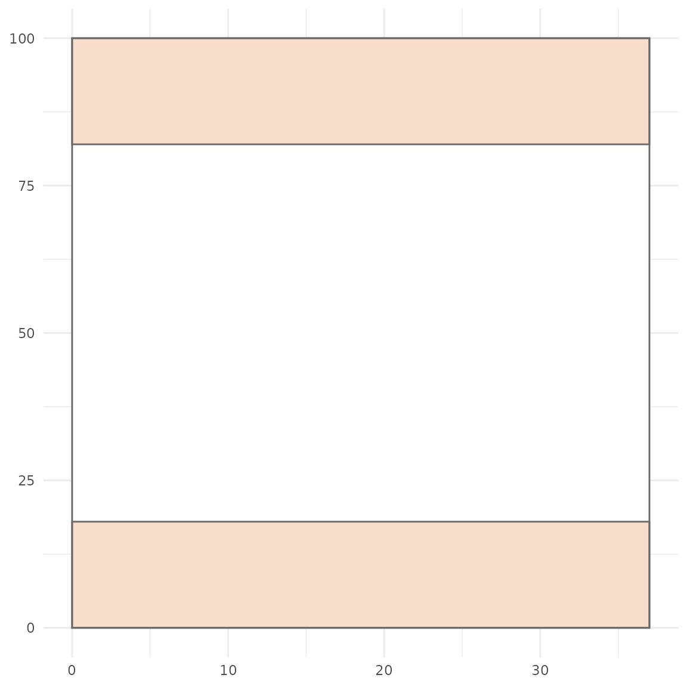
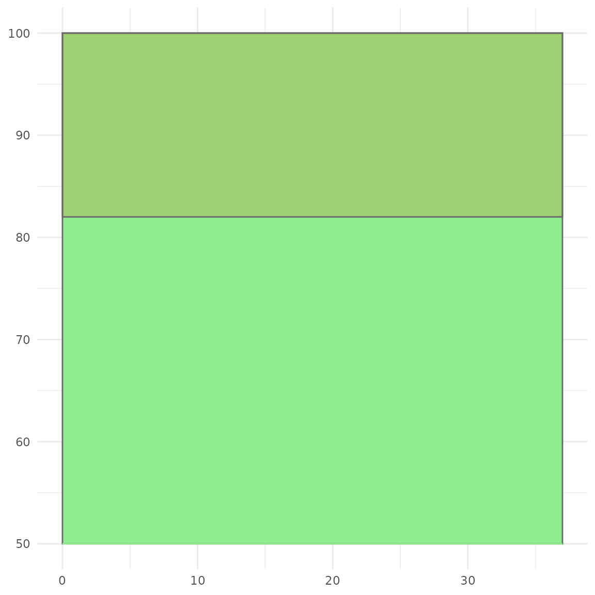
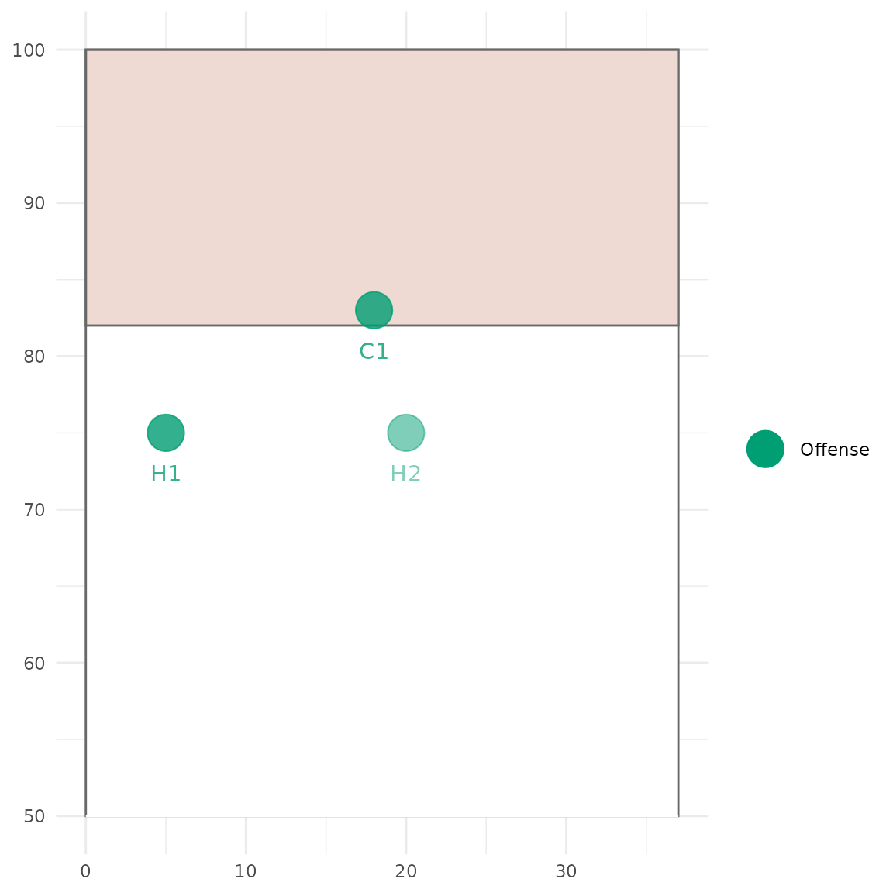
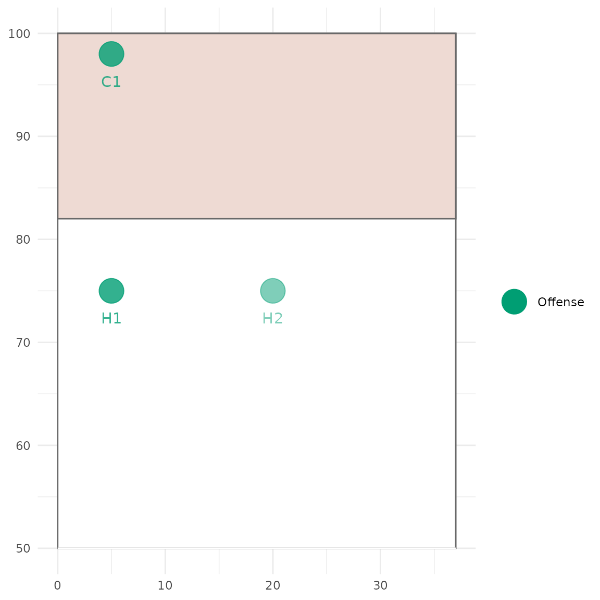
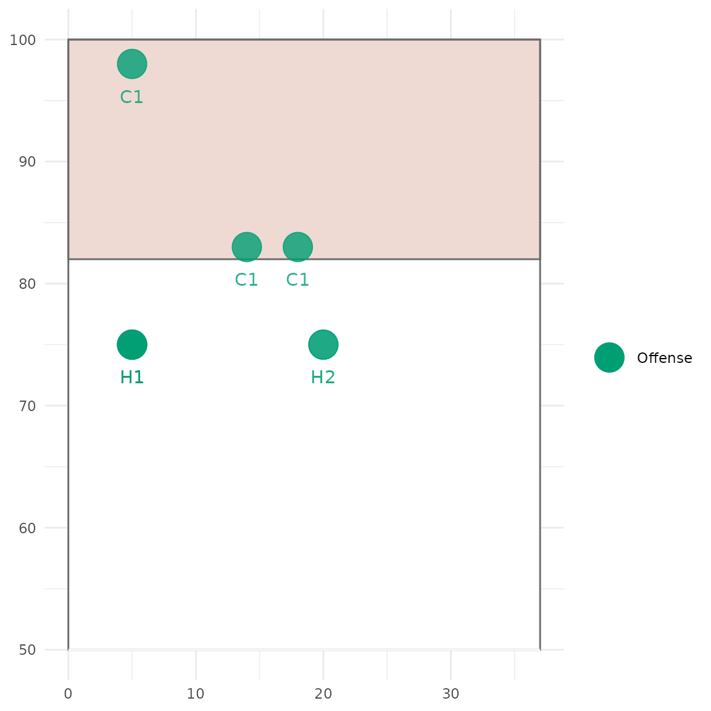
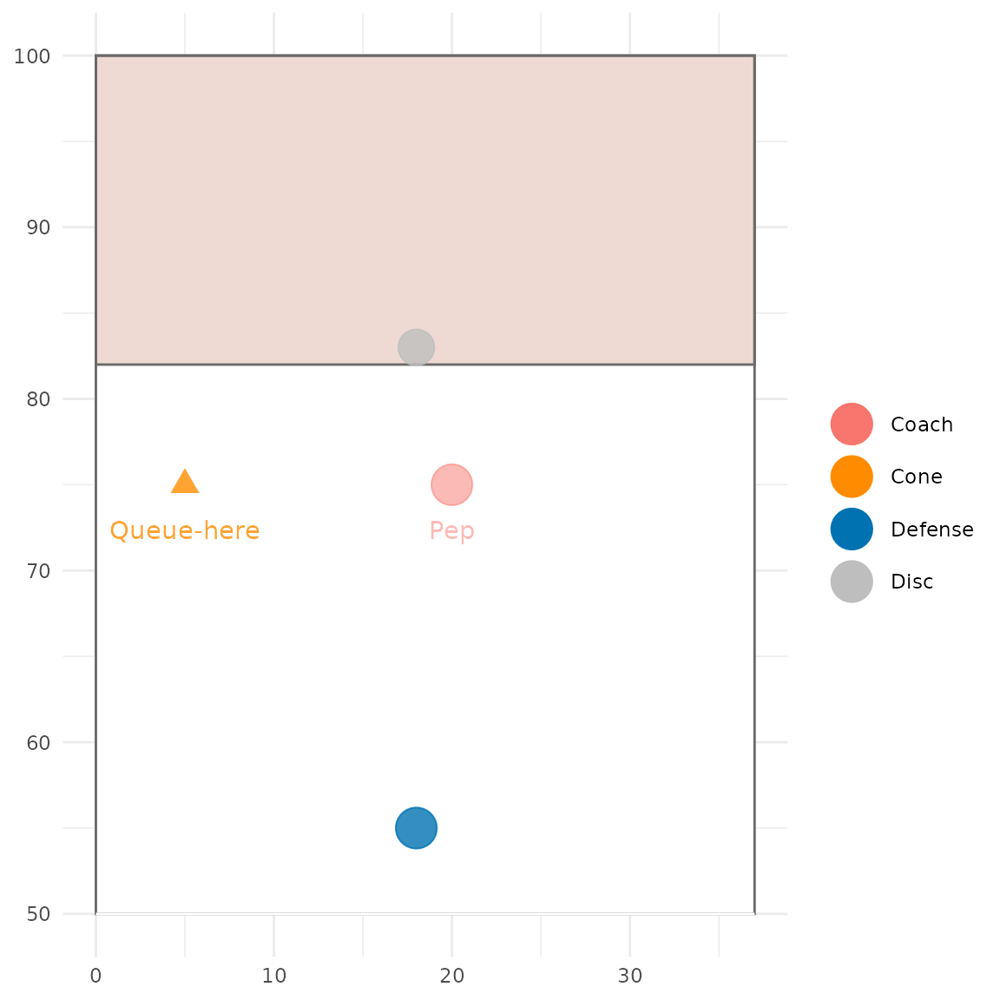
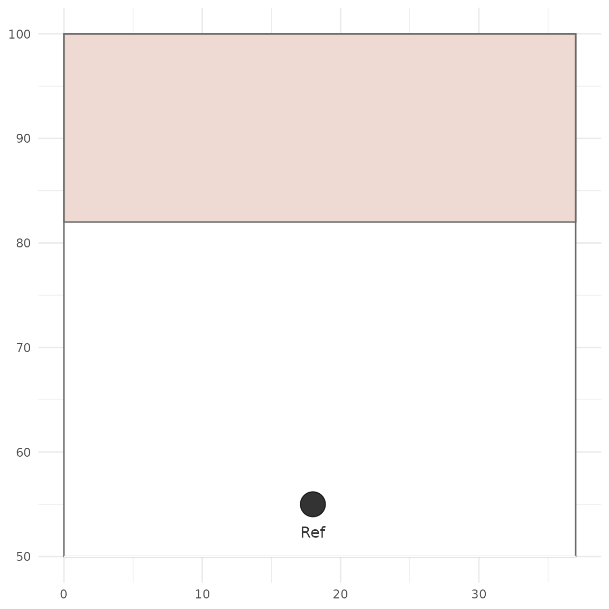
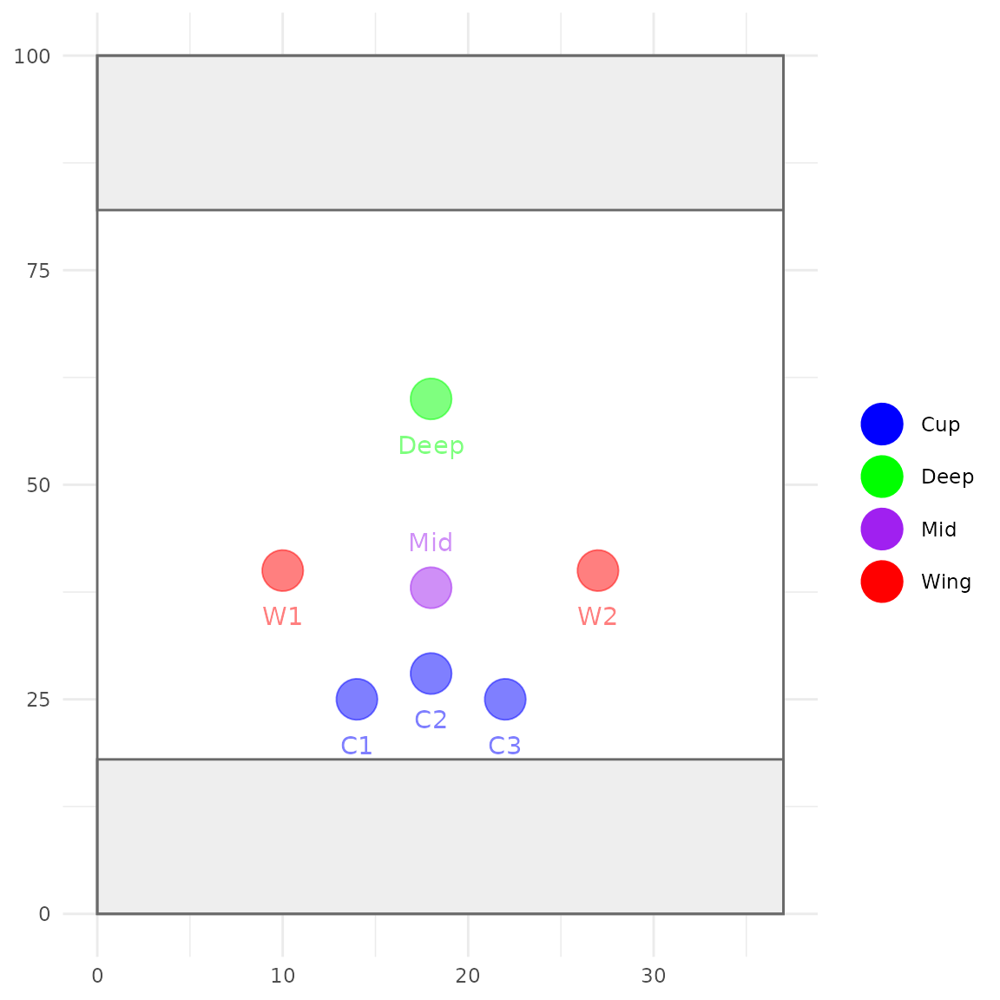

Creating a playbook
Creating_a_playbook.RmdGetting Started
Install ggulti from github with:
install.packages("devtools")
devtools::install_github("swebb1/ggulti")Load the ggulti package:
Create a pitch
Use the ggpitch() function to create a pitch. The
type argument specifies the type of pitch to create. The
endzone_fill argument specifies the color of the
endzone.
pitch = ggpitch(type="half_attack",endzone_fill = "#AA4422")Pitch types
“full” = Full pitch (default)
“half_attack” = Half a pitch showing attacking endzone (up)
“half_defend” = Half a pitch showing defending endzone (down)
“blank” = Lined out area. Useful for drills etc.
“void” = No pitch background.
ggpitch()
ggpitch(type = "half_attack", fill = "lightgreen", alpha=1)
ggpitch(type = "half_defend", endzone_fill = "black")
ggpitch(type = "blank", ymax = 50, xmax = 30)
ggpitch(type = "void")
The ggpitch() function returns a ggplot object
that can be customised further.
Pitch objects
Pitch objects are plotted as points and are typically players, discs
and cones. Use the pitch_object() function to create object
and their positions.
Let’s create a list of three offense players attacking the endzone
with the pitch_object() function:
offense <- list(
pitch_object("H1", show=T, x=c(5),y=c(75), alpha = 0.8, frame = 1:3),
pitch_object("H2", show=T, x=c(20), y=c(75), alpha = 0.5, frame = 1:3),
pitch_object("C1", show=T, x=c(18,14,5), y=c(83,83,98), alpha = 0.8, frame = 1:3)
)In the code above, we have two stationary handlers (H1 and H2) and one cutter (C1) making a cut along the front of the endzone and to the back corner.
What are frames?
Frames are used to animate objects. In the code above, the
frame argument specifies the frames that the object is
visible. In this case, the objects are visible in frames 1, 2 and 3. H1
and H2 are stationary objects so only have single x and y coordinates.
C1 is a moving object so has multiple x and y coordinates for each
frame. The frame argument is optional and defaults to 1 (e.g. a single
image).
We can plot out our players on the pitch we created using the
plot_play() function. The default is to plot frame 1.
plot_play(pitch,object_list = offense)
We can also choose which frame to plot:
plot_play(pitch,object_list = offense, static_frame = 3)
Or we can plot all frames and objects which might be useful when creating our plots:
plot_play(pitch,object_list = offense,show_all = T)
Other object types
By default, the object type is set to “Offense”. The following object types are recognised
“Offense” = Green circle
“Defense” = Blue circle
“Coach” = Red circle
“Cone” = Orange triangle
“Disc” = Small grey circle
random <- list(
pitch_object("Queue-here", show=T, object = "Cone", x=c(5),y=c(75), alpha = 0.8, frame = 1),
pitch_object("Pep", show=T, x=c(20), object = "Coach", y=c(75), alpha = 0.5, frame = 1),
pitch_object("disc", show=F, object = "Disc", x=c(18), y=c(83), alpha = 0.8, frame = 1),
pitch_object("D1", show=F, object = "Defense", x=c(18), y=c(55), alpha = 0.8, frame = 1)
)
plot_play(pitch,object_list = random)
Custom objects
You can also add your own custom objects by specifying a different
object argument.
custom <- list(
pitch_object("Ref", show=T, object = "Referee", x=c(18), y=c(55), alpha = 0.8, frame = 1)
)
plot_play(pitch,object_list = custom)By default the object will present as an offense object. You can
change the default options (colour, size, shape) in the
plot_play() function:
plot_play(pitch,object_list = custom,default_obj_col="black")
Alternatively, you can use the pv argument to add a new
list of plotting values. The ggulti_plot_values object
gives access to default values:
pv <- ggulti_plot_values
pv$obj_cols <- c(pv$obj_cols,"Referee" = "black")
pv$obj_shapes <- c(pv$obj_shapes,"Referee" = 18)
pv$obj_sizes <- c(pv$obj_sizes,"Referee" = 2)
plot_play(pitch,object_list = custom, pv=pv)
By customising objects, you can specifiy specific teams, genders or even psoitions e.g.
zone_positions <- c("Cup" = "blue", "Wing" = "red", "Mid" = "purple", "Deep" = "green")
pv <- ggulti_plot_values
pv$obj_cols <- c(ggulti_plot_values$obj_cols, zone_positions)
zone <- list(
pitch_object("C1", show=T, object = "Cup", x=c(14), y=c(25)),
pitch_object("C2", show=T, object = "Cup", x=c(18), y=c(28)),
pitch_object("C3", show=T, object = "Cup", x=c(22), y=c(25)),
pitch_object("W1", show=T, object = "Wing", x=c(10), y=c(40)),
pitch_object("W2", show=T, object = "Wing", x=c(27), y=c(40)),
pitch_object("Mid", show=T, object = "Mid", x=c(18), y=c(38), label_pos = "up"),
pitch_object("Deep", show=T, object = "Deep", x=c(18), y=c(60))
)
plot_play(ggpitch(endzone_fill="darkgrey"),object_list = zone,pv=pv)